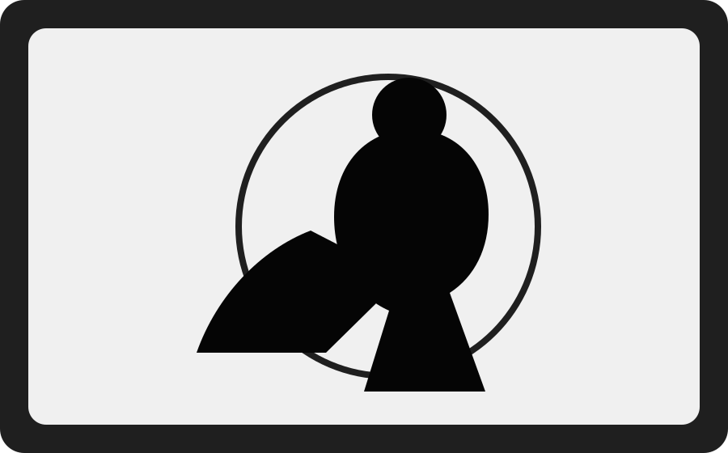

01
CAMS VR Medical Simulation
NAIT capstone proof of concept for immersive VR medical simulation using Unreal Engine, a digital twin facility, and AI conversation tools.
Live View
Gameplay Programmer · Unity · Unreal Engine

01
NAIT capstone proof of concept for immersive VR medical simulation using Unreal Engine, a digital twin facility, and AI conversation tools.
Live View
02
A multiplayer cryptid horror vertical slice built in Unity, focused on evidence gathering, survival, and self-taught networking systems.
Live View
03
A racing prototype with saved player profiles, best times, leaderboards, and ghost car playback.
Live View
“I like building the systems behind the experience: the save data, the interaction flow, the multiplayer logic, and the small details that make a game feel complete.”